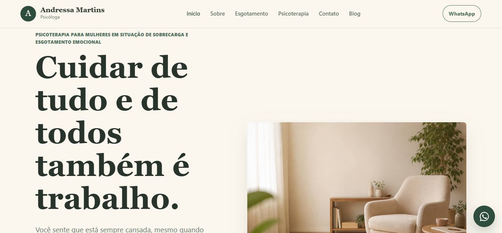
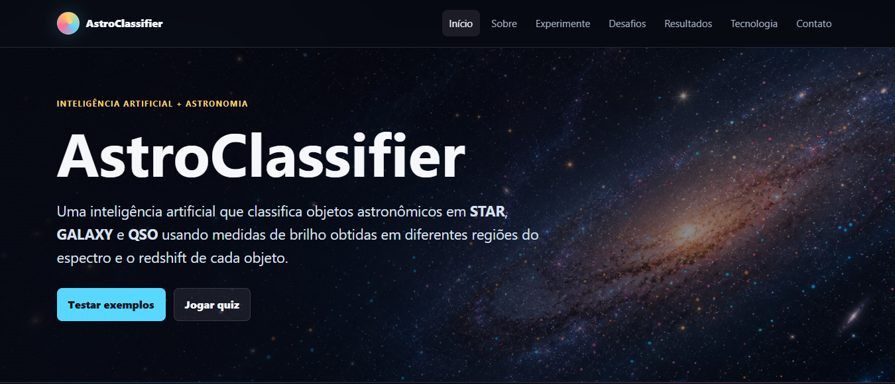

Física Computacional • Machine Learning • HPC
Desenvolvo soluções que conectam software, dados e infraestrutura computacional, com experiência em Machine Learning, ambientes Linux e Computação de Alto Desempenho.
Sou formada em Física Computacional pela Universidade Federal Fluminense (UFF) e atuo na interseção entre software, dados e infraestrutura computacional. Minha experiência combina desenvolvimento, Machine Learning e ambientes HPC/Linux, desde projetos acadêmicos e aplicações web até infraestrutura e soluções utilizadas em ambientes corporativos.

Desenvolvimento de um website institucional para cliente real, incluindo blog administrável, autenticação via GitHub OAuth, deploy automatizado na Vercel e configuração de domínio próprio.

Projeto desenvolvido a partir do meu Trabalho de Conclusão de Curso em Física Computacional. Utiliza uma rede neural supervisionada para classificar objetos astronômicos como GALAXY, STAR e QSO, combinando dados fotométricos do SDSS-DR16 e WISE. O modelo alcançou aproximadamente 93% de acurácia e foi posteriormente integrado a uma aplicação web interativa para utilização e demonstração do classificador.
Desenvolvimento de uma aplicação web interna para gestão de equipamentos, estoque, projetos e clientes, com controle de acesso por perfis, rastreabilidade de operações e módulo de auditoria. A plataforma centraliza informações e processos operacionais, oferecendo maior controle e organização na gestão do inventário.
Implementação em Fortran 90 de um modelo de tráfego urbano (BML – Regra A), com otimização manual, análise de desempenho e paralelização com OpenMP. Execução em cluster HPC utilizando SLURM.
Plataforma web em desenvolvimento para acompanhamento de treinos, registro de refeições e monitoramento de indicadores de saúde. 🚧 Ainda em construção 🚧
Universidade Federal Fluminense — UFF
Classificação Fotométrica de Objetos Astronômicos com Redes Neurais